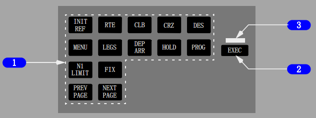
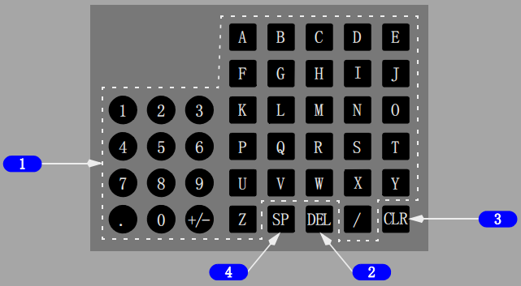

1 控制显示组件(CDU)显示
显示FMS数据页面。
2 行选键
按压--
• 将草稿栏的数据移至所选行
• 将所选行的数据移至草稿栏
• 选择适用的页面、程序或性能方式
• 当草稿栏中显示DELETE时，删除所选行数据。
3 亮度控制
旋转--控制显示亮度。
跷板电门(加或减) -- 控制显示亮度。(选型)
Note: 新的CDU/MCDU面板图增加了对更新的跷板式亮度控制电门的描述。
所有键的功能和位置保持不变。
4 信息(MSG)灯
亮(白色)--显示草稿栏信息。
5 偏航(OFST)灯
亮（白色）--LNAV提供水平的航路偏航引导。
6 失效(FAIL)灯
亮(琥珀色)--FMC已失效。
6 失效(FAIL)灯(选型)
亮(琥珀色)仅作测试目的。FMC失效时MCDU失效（FAIL）灯不会亮。

1 CDU功能键
按压--
• INIT REF（起始参考）-- 显示数据起始页面或参考数据页面
• RTE（航路）-- 显示用来输入或修改起飞机场、目的地机场或航路的页面
• CLB（爬升）--显示用来察看或修改爬升数据的页面
• CRZ（巡航）--显示用来察看或修改巡航数据的页面
• DES（下降）--显示用来察看或修改下降数据的页面
• DIR INTC（直飞切入）-- 显示用来修改航路从当前位置直飞任一航路点或切入任一航道飞至任一航路点的页面
• MENU（菜单）-- 显示用来选择由CDU控制的子系统的页面
• LEGS(航段)--
• 显示评估或修改水平和垂直数据的页面
• 显示用来控制PLAN方式显示的页面
• DEP ARR（离场进场）-- 显示用来输入或改变离场进场程序的页面
• HOLD（等待）-- 显示用来建立等待航线和显示等待航线数据的页面
• PROG（进程）-- 显示用来察看动态飞行和导航数据的页面，包括航路点和目的地的预计到达时间（ETA)、剩余燃油和预计到达数据
• N1 LIMIT （N1限制）-- 显示用来察看或修改N1推力限制的页面
• FIX（定位点)-- 在地图显示中显示用来建立参考点的页面
• PREV PAGE（前一页）-- 显示有关页的前一页（例如：LEGS页）
• NEXT PAGE（后一页）-- 显示有关页的后一页。
2 执行(EXEC)键
按压--
• 使数据修改生效
• 使执行灯灭。
3 执行灯
亮（白色）-
生效数据被修改但尚未执行。

1 字母/数字键
按压--
• 向草稿栏输入所选字符
• 斜杠（/）键 -- 向草稿栏输入“/”
• 加减（+/-）键 -- 第一次按压输入“-”到草稿栏。
接着按压将交替输入“+”和“-”。
2 删除(DEL)键
按压 -- 向草稿栏输入DELETE。
3 清除(CLR)键
按压--
• 清除最近输入草稿栏的字符
• 清除草稿栏信息。
按压并保持 -- 清除草稿栏中的所有数据。
4 空格(SP)键
按压 -- 在草稿栏中输入空格。
介绍
飞行管理系统(FMS)协助飞行机组管理自动导航、优化飞行性能、监控燃油和驾驶舱显示。
自动飞行功能管理飞机的水平飞行航径(LNAV)和垂直飞行航径(VNAV)。
显示内容包括飞机定位地图、在空速和N1指示器上显示的指令标记(游标)，以助于进行有效剖面飞行。
飞行机组将所需航路与飞行数据输入到CDUs中。然后FMS使用其导航数据库、飞机位置和支持系统数据，为人工或自动飞行航径控制计算出指令。
FMS可自动调谐导航无线电并确定LNAV航道。FMS导航数据库为航路、标准仪表离场(SID)、标准仪表进场(STAR)、等待航线和程序转弯飞行提供必要的数据。
可以计算并指令计划航路的水平偏航。
对于垂直导航，计算包括燃油消耗数据、最佳速度以及推荐的高度等内容。
使用巡航高度和穿越高度限制来计算VNAV指令。
当在要求的到达时间(RTA)方式下工作时，计算包括要求的速度、起飞时间及航路进程信息
飞行管理计算机(FMC)
飞行管理系统的基础是飞行管理计算机。
因为FMC作为一种术语已被广泛理解，所以为标准化和简单化，手册中都使用FMC。
FMC使用飞行机组输入的飞行计划信息、飞机系统数据和来自FMC导航数据库的数据来计算飞机当前位置及最佳飞行剖面所需的俯仰、横滚和推力指令。
FMC将这些指令传到自动油门、自动驾驶和飞行指引仪。
地图和航路信息发送到DUs。
EFIS控制面板用来为导航显示选择所需信息。
方式控制面板用来选择自动油门、自动驾驶和飞行指引仪的工作方式。
FMC和CDU用于航路和终端区域导航、RNAV进近，并在实施所有仪表进近时作为主要导航方式的补充。
两部FMC的安装被审定为导航系统的“唯一来源。”装有两部FMC的飞机可执行无线电助航设备覆盖区以外的操作。
第二部FMC作为备用，如果另一部FMC失效，它可提供完整的导航功能。
主FMC：
• 分配两部FMC之间的助航设备调谐和更新功能
• 确保两部FMC同步
• 控制CDU显示
• 提供自动驾驶输入
• 提供自动油门系统输入
• 处理ACARS(数据链)信息。(选型)
将FMC源选择电门置于BOTH ON L 或 BOTH ON R将隔离FMC操作，仅使用左或右FMC。
在正常(NORMAL)位，左FMC被默认为主FMC。
虽然机组可以通过任一CDU输入信息，但主FMC负责与次FMC同步该信息并更新两部CDU显示。
当外部位置更新不可用时，FMC使用IRS位置作为参考。
当IRS成为唯一的位置参考时，FMC自动修正IRS位置以确定最可能的FMC位置。
正常位置更新期间，通过FMC监控IRS性能而产生修正系数，以确定典型的IRS误差值。
需要注意的是，当外部位置更新不可用时，导航精度可能比要求的低。
机组应密切监控FMC导航，尤其是接近目的地时。
在下降阶段应通过使用无线电助航设备和雷达信息(如可用)来确定FMC导航精确度。
Note: 不精确的位置更新可能会使飞机偏离应飞轨迹。
控制显示组件(CDUs)
两个完全相同但相互独立的CDUs为飞行机组与FMC提供交流途径。
机组可使用任一CDU向FMC输入数据，但是要避免同时输入。
在两部CDU上可获得同样的FMC数据和计算结果，但是每个飞行员可对单个CDU上显示的信息进行控制。
FMC位置更新
如果GPS更新(GPS UPDATE)在关闭（OFF）位，按压TO/GA电门时FMC将位置更新到起飞跑道头。
进行联络道起飞时，必须在TAKEOFF REF页面输入联络道数据。
如果GPS更新(GPS UPDATE)在打开（ON）位，TO/GA更新受抑制。GPS UPDATE在导航选项(NAV OPTIONS)页面。
飞行中，FMC位置根据GPS、导航无线电和IRS持续更新。
更新的优先顺序基于支持系统有效数据的可用性。
源于导航传感器位置的FMC位置更新采用下列优先顺序：
• GPS
• 两个或更多的DME台
• 一个带有DME配置的VOR
• 一个航向道和配置的DME
• 一个航向道。
所选无线电导航辅助设备的电台识别码和频率显示在导航状态(NAV STATUS)第1/2页上。
FMC逻辑选择GPS位置作为对FMC位置的主更新。(选型)
如果所有GPS数据都不可用，FMC转为无线电或IRS更新。
双频扫DME无线电由FMC自动调谐。
为了更新FMC位置，根据最佳可用信号（从几何形状和强度方面）选择要调谐的台站，除非飞行计划要求特定的台站。
无线电位置由两个DME弧形的交叉点确定。
如果DME无线电失效，或如果合适的DME台站不可用，FMC仅根据IRS的位置信息来导航。
FMC将两部VHF导航无线电用于在ILS进近期间的航向道更新，也用于机组的导航监控。
Note: FMC设计为在其位置更新期间，能自动拒绝不可靠的助航设备数据。
但是在某些情况下，有误差的助航设备也可能满足合理性标准，向FMC提供不精确的无线电位置。
最易受影响的时段之一是在刚起飞不久无线电更新时。
这通常表现在接通LNAV后突然的航向修正。
这种位置漂移可在地图上看见，它将所需航迹及跑道符号错开到一个明显不同于在地面滑跑时显示的位置。
Note: 如果机组观察到了上述任意情况之一，应仔细监控FMC。
没有足够的无线电更新可用时，导航显示地图方式可能显示漂移误差。
这种误差会导致所显示的飞机、航路、航路点和导航设备位置偏离它们的实际位置。
一个交叉航迹、未被探测到的地图偏移可能导致飞机沿着一条偏离所需航迹的地面航迹飞行。
一个沿航迹、未被探测到的地图偏移可能导致机组开始高度改变的时间比预想的要早或晚。
在任一情况下，一个未被探测到的地图偏移可能会影响地形越障或飞行间隔。
可通过比较导航显示地图方式上的飞机位置和ILS、VOR、DME和ADF系统提供的数据发现地图漂移误差。
速度/高度限制
所有速度限制被FMC视为“在”限制上，除非被飞行员修改。
当被飞行员修改时：
• 输入“等于或高于”空速限制时，带一个后缀字母A(例如：250A/)。
• 输入“等于或低于”空速限制时，带一个后缀字母B(例如：200B/)。
• 输入强制空速限制时，不带后缀字母(例如：220/）
输入等于或高于高度限制时，带一个后缀字母A(例如：220A)。
输入等于或低于高度限制时，带一个后缀字母B(例如：240B)。
输入强制高度限制时，不带后缀字母(例如：270)。
两个高度间的高度限制首先显示较低高度限制，然后是较高高度限制（例如：14000 FL240）。
MCP高度插入
在爬升或下降时，可使用高度插入电门删除当前高度和MCP高度之间的高度限制。
在限制高度改平且允许在穿越限制航路点前飞至更高的高度时，重设MCP高度到新的许可高度，并按压高度插入电门。
高度插入电门可用来增加巡航高度。
当在巡航高度改平，并且允许飞至更高的高度时，将MCP高度重置到新的巡航高度并按压高度插入电门。
不能用高度插入来减小巡航高度。
设置一个较低的高度，然后按压高度插入电门会导致FMC以选择的下降方式提早下降。
当飞机未接近下降顶点时，高度插入选项允许机组使用方式控制面板上的高度插入功能开始巡航下降。
这项操作限定在50海里距离内。如果飞机距离下降顶点（T/C）超过50海里，飞行员可能调低MCP高度并按压MCP上的ALT INTV按钮。
FMC的反应与使用高度插入开始巡航爬升时相似。
FMC ALT设定至新的巡航高度，并使用现有的巡航下降引导方法开始巡航下降。
当离下降顶点超过50海里时，只要MCP ALT的设置不低于下降高度限制，就可以使用高度插入开始巡航下降(CRZ DES)。
对于这种距离下降顶点超过50海里，并且MCP高度调到低于下降限制的情况，按压ALT INTV按钮将会导致从巡航(CRZ)过渡到提前下降(EARLY DES)并遵循限制。
随后按压ALT INTV按钮可用于删除限制。
MCP速度插入
除了在速度插入方式情况下，FMCS速度目标限制飞机在其操作限制内。
这些操作限制包括失速保护、最大操作速度、襟翼标牌、推力限制和机动裕度。
在速度插入的进近阶段，退出速度插入后，俯仰方式仍保持VNAV PTH。
无论IAS MACH选择器如何变化，FMC将保持在现有的垂直方式。
速度插入退出后，下降方式将转换回航径方式。
提前下降
在 VNAV ACT DES方式，当飞机低于计算的下降航径时，FMC被视为处于提前下降状态。
VNAV指令1000fpm的下降直至切入慢车下降航径，或直至为飞行计划中存在的“等于（AT）”或“等于或高于”高度限制遵守了FMC目标高度--以先到者为准，即切入慢车下降航径或遵守FMC目标高度。
如果计划使用速度下降，VNAV指令慢车推力下降。
如要开始提前下降，使用DES页面上的DES NOW提示符。
当把MCP ALT调到一个较低高度但此高度在或高于任何下降限制高度，按压ALT NITV会出现CRZ DES。
飞机在当前的巡航高度必须距离下降顶点超过50海里。
如果距离下降顶点在50海里之内，将会调用提前下降方式。
在之前的操作飞行程序(OFPs)中，不管距下降顶点有多少距离，该动作都会导致进入提前下降运行方式。
• 当飞机不在距下降顶点50NM内时，巡航下降可使用MCP上的高度插入功能启动；或在MCP上设置新的改平高度后，在FMC CRZ页面输入一个新的巡航高度来启动。
• 当飞机距离下降顶点50海里或少于50海里时，可以使用高度插入开始提前下降。
• 如果在距下降顶点50NM或以内且MCP高度低于当前高度时使用高度插入来开始下降，或通过DES页面的DES NOW提示符开始下降，则FMC会为自动驾驶生成-1000 fpm 的提前下降垂直速度直至截获垂直航径，或在VNAV接通时到达下一限制高度，或达到MCP高度而改平。
• 当飞机距离下降顶点超过50海里，并且VNAV已接通，MCP高度低于当前高度但等于或高于任何下降限制高度时，如果使用高度插入开始下降，其结果将会是巡航高度被重置为MCP高度，并且生成-1000英尺/分钟的巡航下降垂直速度指令飞至新的巡航高度。
• 飞机距离下降顶点超过50海里，并且VNAV已接通，MCP高度低于当前高度并低于某个下降限制高度时，如果使用高度插入开始下降，其结果将会是生成-1000英尺/分钟的提前下降垂直速度指令，直至切入下降航径或在MCP高度改平。
进近
当飞机在下列范围内时，FMC过渡到“进近中”：
• 距第一个进近航路点2海里之内(包括进近过渡，例如圆弧和程序转弯)，或
• 距机场标高2000英尺之内，取先到达者。
当FMC处于“进近”方式时，呈现下列特征：
• 无法满足RNP(UNABLE RNP)警戒提示级别更高
• 当准备复飞并且MCP高度设置在至少高于飞机当前高度300英尺以上时，VNAV将继续指令下降
• 如果飞机低于垂直航径超过200英尺，VNAV指令零垂直速度直至截获航径。
• 如果MCP高度设置到高于当前高度250英尺以上，VNAV保持在VNAV PATH。
Note: 不是仅在进近时才显示指定的航径角。在STAR中也可能会为一个航段定义一个航径角，并在航路航段（RTE LEGS）页面上显示。
下列情况下，FMC转换并退出“在进近”：
• 选择TO/GA
• 飞机着陆
• 航路点循环至复飞的第一个航路点
• 复飞中执行一个直飞航路点。
下列情况通常在进近操作中遇到，但不是由“进近中”逻辑确定的：
• 如果接通速度插入：
• 在慢车或非慢车阶段襟翼收上的航径下降中，VNAV转换至VNAV SPD
• 襟翼放下时，VNAV保持在VNAV PTH
• 当点对点(几何航径)航段生效时，VNAV保持在VNAV PTH
• 当垂直角航段(RTE LEGS页面上的GP x.xx)生效时，VNAV保持在VNAV PTH
• 如果垂直角航段(GP x.xx显示在RTE LEGS页面上)生效，VNAV转换到VNAV PTH而不需要飞行员进行操作。
• 如果在垂直角航段上航迹偏差超过2倍的RNP值，且LNAV未接通，则VNAV断开。
VNAV在任何襟翼设置下都将保持接通，允许使用垂直角指引进近。
五边进近速度可以在APPROACH REF页面设置。
如果以VNAV方式使用垂直角引导ILS进近，当通过GS-XXX点时如果G/S已预位，VNAV将断开，但可以被重新接通。
如果GS-XXX点被删除，VNAV在进近中将始终保持接通。
对于RTE LEGS页面上没有跑道航路点的进近，VNAV航径计算至MDA或复飞点的计算高度。
这个计算的高度可能低于MDA以保证飞行航径角和正常入口穿越高度。
Note: 飞行机组要确保在获得足够的目视参考前不要下降到低于MDA的高度。
复飞
在2000英尺无线电高度以下，当下述任一情况发生时，FMC由进近逻辑过渡到复飞逻辑：
• 下降中按压任一TO/GA电门
• 复飞中执行一个直飞航路点(复飞点除外)
• 在下降中且最后的进近航路点转换到复飞的第一个航路点时自动执行。
• 飞机以高于600fpm的垂直速度爬升，襟翼由着陆设置收至15或1一旦建立FMC复飞逻辑：
• FMC由下降生效过渡到爬升生效
• 推力限制转变为复飞推力
• 低于当前飞机高度的所有下降高度限制被删除且替换为预计高度
• 如果需要改航到其它机场，则原来的目的地机场(复飞开始的机场)变为新的可以选择SID的起始机场。
Note: LNAV可在飞机爬升到400英尺无线电高度以上时接通，但VNAV只能在襟翼收起后才可接通。
如果通过按压TO/GA电门或选择复飞推力开始复飞，巡航高度(CRZ ALT)将转变为以下高度中的最高者：
• 复飞的最高限制
• 高于机场标高1500英尺
• MCP高度。
Note: 如果MCP高度是三者中最低的，自动驾驶(如接通)将使飞机在MCP高度改平。
如果是按照直飞或航路点排序开始复飞，巡航高度(CRZ ALT)将转变为以下高度中的最高者：
• 复飞的最高限制
• 高于机场标高1500英尺
FMC数据库
FMC包含两个数据库：
• 性能数据库
• 导航数据库。
性能数据库使飞行机组在飞行中无需查阅性能手册，并向FMC提供计算俯仰和推力指令所需的信息。
通常所需的所有信息都可以在CDU上显示。
该数据库包括：
• 飞机阻力和发动机特性
• 最大和最佳高度
• 最大和最小速度。
机务人员可以通过输入阻力和燃油流量的修正系数来进一步修正数据库。
导航数据库包括通过查阅导航图而得到的大部分信息。
这些信息可以在CDU或导航显示器上显示。该数据库包括：
• VHF助航设备的位置
• 航路点
• 机场
• 跑道
• 其它由航空公司选择的信息，如SIDs、STARs、进近和公司航路。
如果永久性数据库未包括所有需要的飞行计划数据，则额外的机场、助航设备以及航路点可由机组定义并存入补充或临时导航数据库中。
机组通过各种CDU页面人工向FMC输入所需的数据后，使用这些额外的数据库可提供具有世界范围的导航能力。
补充导航数据库中的信息被无限期地储存，需要机组采取特定措施才能删去；
临时导航数据库在飞行结束时自动清除。
补充和临时数据库可共同储存40个助航设备和6个机场，根据先来先用的原则，输入信息可储存在任一数据库中。
对于航路点类型，临时数据库可专门储存20个输入(包括航路或航路航段页面上建立的航路点)。
其他20个航路点(最多40个)可根据先来先用原则，储存到临时或补充数据库中。
当任一数据库的储存容量已满时，机组应删除不再需要的输入，以便为新的输入留出空间。创建的航路点不能存入数据库跑道类型中。
FMC包含两组导航数据，每组有效期为28天。
每组数据库与正常的导航图表修订周期相吻合。
FMC使用有效数据组进行导航计算。导航数据库的内容定期更新，并在现用数据过期之前传输到FMC。
减推力起飞
减推力起飞可降低EGT，延长发动机寿命。只要性能限制和减噪程序允许，任何时候均可使用。
减功率起飞
可在N1限制页面上选择固定的减功率。
《飞机飞行手册》(AFM)提供了这些减功率的性能数据。
选择了减功率起飞后，推力设定值参数被认为是起飞限制，因此除紧急情况外，不应进一步前推推力手柄。
在地面出现单发后，进一步增加推力可能会导致失去方向控制。
对于所选的减功率情况，使用FMC提供的起飞速度或PI(飞行性能)章节中规定的起飞速度。
减功率起飞的额定值可通过假设温度进一步减小。
对于所选的减功率情况或不同的起飞额定功率条件，使用FMC提供的起飞速度或PI(飞行性能)章节中规定的起飞速度。
假设温度减推力起飞
通过使用高于实际温度的假设温度可获得小于全额定推力的起飞推力。
在N1限制（N1 LIMIT）页面或起飞参考（TAKEOFF REF）第2页上输入选择温度(SEL TEMP)值后，即可获得所需的推力水平。
使用经过批准的数据源来选择假设温度。
许可的最大减推力为任一批准的额定功率值的25%。
如果存在影响刹车的情况，如跑道上有融雪、雪或冰，或如果存在潜在的风切变条件，则不要使用假设温度减推力。
如果假设温度的方法应用到固定的减功率中，额外推力的使用不能超过固定减功率N1限制，因为在地面上可能会失去方向控制。
当在全功率下使用假设温度的方法，减推力设定不作为限制考虑。
如果遇到需要额外推力的情况，机组可以人工使用全推力。
减推力爬升
可在N1限制页面上选择两个固定的爬升减功率。
CLB-1提供一个降低3%N1（约10%推力）的爬升限制。
CLB-2提供一个降低6%N1（约20%推力）的爬升限制。
至15000英尺时，减小的爬升调定值会逐渐增加到全额定爬升推力。
巡航中，推力参考自动变为CRZ。
可在N1限制页面上人工选择参考。
使用假设温度减推力起飞或减功率起飞会影响FMC对减功率爬升的计算。
如果在起飞参考页面上指定了减推力起飞，FMC将按需重新计算CLB-1和CLB-2值，以免爬升N1值大于减推力起飞N1值。(好像并没有)
使用减功率爬升推力可降低发动机维护成本，但会增加总的航程燃油。
燃油监控
FMC从燃油量指示系统获得燃油数据。
性能起始(PERF INIT)页和进程(PROGRESS)第1/3页上显示燃油量值。
如果总燃油量数据无效，则显示草稿栏信息VERIFY GW AND FUEL(核实全重和燃油)。
性能起始页面的燃油(FUEL)行变为虚线。
FMC使用最后一个有效燃油量进行性能预测和VNAV操作。
机组应人工输入预计的燃油重量。
在飞行剩余阶段需要对燃油重量进行定期更新以保持全重现行有效。
FMC不更新人工输入的燃油重量。
如果不进行随后的输入，每30分钟显示一次草稿栏信息：VERIFY GW AND FUEL(核实全重和燃油)。
下降过程中如果选择了Vref，则不显示草稿栏信息。
如果FMC检测到燃油量意外下降，则显示草稿栏信息：CHECK FMC FUEL QUANTITY(检查FMC燃油量)。
FMC连续估算按现用航路飞行的情况下到达目的地机场时剩余的燃油量。
如果估算的值小于在性能起始(PERF INIT)页上输入的燃油储备值，则显示CDU显示信息：USING RSV FUEL(使用备份燃油)。
如果预计到达目的地时剩余燃油是2000磅(900公斤)或更少，则CDU显示信息：INSUFFICIENT FUEL(燃油不足)。
FMC失去电源
FMC的工作要求连续供电。当供电中断少于10秒钟时：
• LNAV和VNAV断开
• FMC保留所有输入的数据
• 当电源恢复时，FMC继续正常工作。
如果在地面失去电源达10秒钟或更长时间，
则在恢复电源时必须重新进行所有飞行前程序和相关输入。
如果在飞行中断电超过10秒钟：
• LNAV和VNAV断开
• FMC保留所有的输入的数据，且当电源恢复时显示航路航段(RTE LEGS)页面，
同时草稿栏显示信息SELECT ACTIVE WPT/LEG(选择现用航路点/航段)。
在可以接通LNAV之前，FMC必须得到如何返回原航路的指令。
选择所需的现用航路点，直飞该点或切入航路至该点。
单部FMC失效
FMC/CDU可自动保留最有效的导航和指引方式，在设备和助航设备可用时，此功能可保持。
如果由于错误或系统失效导致能力降低，FMC随之生成一条机组信息，并在CDU草稿栏中显示。
如果其它系统对FMC的输入失效，受影响的CDU显示为空白，以防止出现显示误导或错误数据。
例如，失去总油量输入会使一些与性能有关的数据变空白。
这些信息与FMC内部反应可提供一个从全FMC引导飞行至FMC自动化性能减弱的有序转换。
如果右FMC故障，
FMC告警灯及FMC信息灯亮。
两个草稿栏都会显示信息：SINGLE FMC OPERATION(单部FMC工作)。
右导航显示器上将显示垂直航迹(VTK)。
如果正在使用自动驾驶B，LNAV和VNAV将断开(如果选择自动驾驶A，则可重新接通)。
25秒到30秒后，右导航显示器将显示失效信息。
将FMC源选择电门置于BOTH ON L(均在左)可恢复右导航显示。
如果左FMC失效，
FMC告警灯亮。
FMC/CDU FAIL灯出现在两部CDU上，并且两部CDU都显示故障模式。
左导航显示器上显示VTK。
LNAV和VNAV将断开，但是如果自动驾驶B正在使用或已被选择，则可以重新接通。
25秒到30秒后，左导航显示器将显示失效信息。
使用右FMC可以继续进行有限的FMC操作(不能在CDU上进行修改)。
为了恢复完整的FMC操作，FMC源选择电门必须移至BOTH ON R。
Note: FMC软件重新启动过程中，导航显示地图航迹可能会快速转到0度然后再回到正确的数值。
两部FMC失效
如果两部FMC失效，FMC告警灯亮。
FMC/CDU FAIL灯出现在两部CDU上，并且两部CDU都显示故障模式。
两个导航显示器上显示VTK。LNAV和VNAV将断开。
25秒到30秒后，两个导航显示器均显示失效信息。
软件异常处理逻辑
Note: 软件异常是软件编码在执行正常流程时出现的中断；
例如，试图解决一个无法解决的地图计算。
在U10.8之前的版本中，FMC应在60秒内三次连续的软件重置后关断。
U10.8及之后的版本进行了修改，诸如对FMC重置的管理更加有效。
软件异常处理逻辑经修正后可在大多数软件异常情况发生时避免FMC完全重启。
如果已输入性能数据，大部分处理过程中的一次异常都将导致FMC的降级操作，而不是功能完全丧失。
在降级方式中：
• 保留LNAV和地图
• FMC预测暂停
• VNAV脱开
如果在现用飞行计划处理过程中发生软件异常，会显示告警级信息VNAV INVALID - PERF(VNAV无效 - 性能)，提示飞行员在VNAV重新接通前，需重新输入成本指数以便重启内部软件预测程序。
输入并执行PERF INIT页的成本指数后，可以重新开始预测，从而允许VNAV重新接通。
如果在MOD PLAN而不是ACT PLAN阶段发生软件重启，FMC将删除MOD PLAN。
将会显示咨询信息INVALD MOD PLAN(无效的修改计划)，提示飞行员该情况已发生。
在这一情况下LNAV和VNAV仍保持接通。
如果在INACTIVE PLAN阶段发生软件重启，FMC将删除INACTIVE PLAN(当前操作无改变)。
将会显示咨询信息INVALD INACTIVE PLAN(无效的非现用飞行计划)，提示飞行员该情况已发生。
这个改进不能防止所有的重启；它不能涵盖那些将可能使FMC内存处于不一致状态的情况。